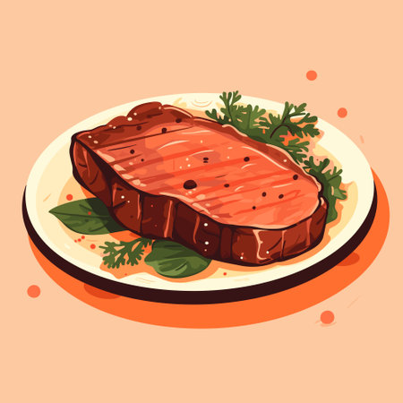
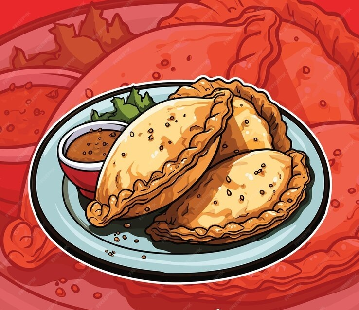

Alfajor de Maicena
Galletas rellenas de dulce de leche, cubiertas de coco rallado. Delicia Argentina.
Dulce de Leche
Crema de leche caramelizada, dulce y cremosa. Ingrediente clave en postres Argentinos.
Asado
Parrillada de carnes, cocinada a la leña o carbón. Tradición social Argentina.
Mate
Infusión de hojas de yerba mate, compartida en grupo. Símbolo de amistad y tradición Argentina.
Locro
Guiso tradicional a base de maíz, porotos y carne. Comida típica en fechas patrias Argentinas.
Empanadas
Masa rellena de carne, pollo, jamón y queso u otros ingredientes, horneadas o fritas. Plato emblemático Argentino.